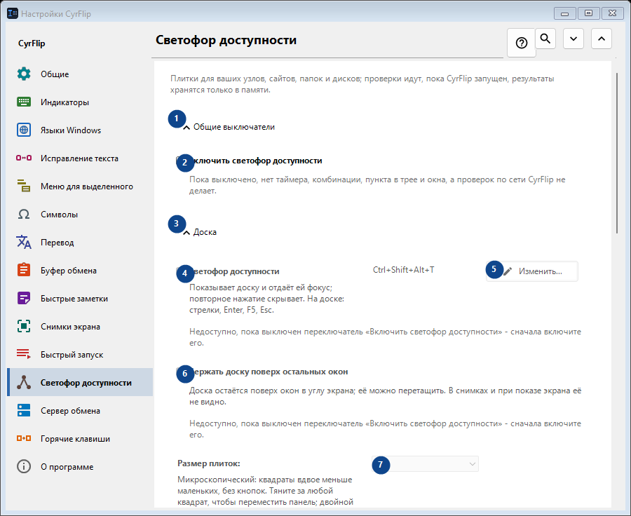
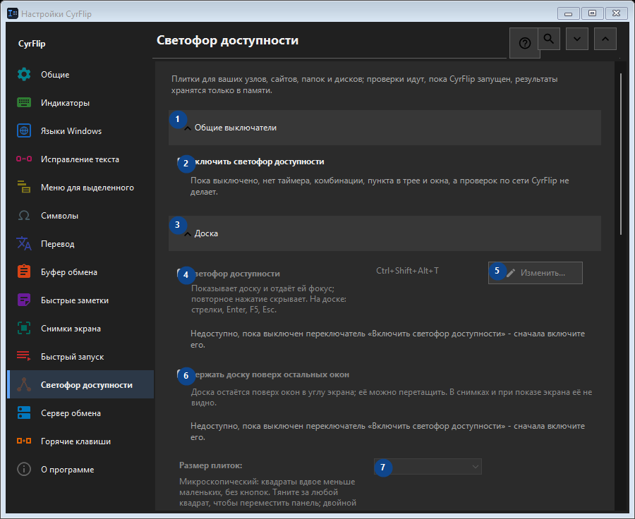

Светофор доступности
Для чего это окно
Плитки для ваших узлов, сайтов, папок и дисков; проверки идут, пока CyrFlip запущен, результаты хранятся только в памяти.


Порядок действий
Настройки применяются сразу. Обязательного порядка нет; используйте группы ниже.
Элементы
1. Общие выключатели
Используйте команду, когда нужно указанное действие. Прочитайте запрос подтверждения перед согласием.
Ваши сочетания клавиш2. Включить светофор доступности
Пока выключено, нет таймера, комбинации, пункта в трее и окна, а проверок по сети CyrFlip не делает.
Ваши сочетания клавиш3. Доска
Используйте команду, когда нужно указанное действие. Прочитайте запрос подтверждения перед согласием.
Ваши сочетания клавиш4. Светофор доступности
Недоступно, пока выключен переключатель «Включить светофор доступности» - сначала включите его. Элемент сейчас недоступен. Сначала включите функцию или выберите запись.
Ваши сочетания клавиш5. Изменить - Светофор доступности
Недоступно, пока выключен переключатель «Включить светофор доступности» - сначала включите его. Элемент сейчас недоступен. Сначала включите функцию или выберите запись.
Ваши сочетания клавиш6. Держать доску поверх остальных окон
Недоступно, пока выключен переключатель «Включить светофор доступности» - сначала включите его. Элемент сейчас недоступен. Сначала включите функцию или выберите запись.
Ваши сочетания клавиш7. Размер плиток
Недоступно, пока выключен переключатель «Включить светофор доступности» - сначала включите его. Элемент сейчас недоступен. Сначала включите функцию или выберите запись.
Ваши сочетания клавиш8. Колонок
Недоступно, пока выключен переключатель «Включить светофор доступности» - сначала включите его. Элемент сейчас недоступен. Сначала включите функцию или выберите запись.
Ваши сочетания клавиш9. Недоступно, пока выключен переключатель «Включить светофор доступности» - сначала включите его.
Выберите или введите значение для соседней подписи. Проверьте его перед продолжением. Элемент сейчас недоступен. Сначала включите функцию или выберите запись.
Ваши сочетания клавиш10. Прозрачность окна светофора
Недоступно, пока выключен переключатель «Включить светофор доступности» - сначала включите его. Элемент сейчас недоступен. Сначала включите функцию или выберите запись.
Ваши сочетания клавиш11. Показать доску
Недоступно, пока выключен переключатель «Включить светофор доступности» - сначала включите его. Элемент сейчас недоступен. Сначала включите функцию или выберите запись.
Ваши сочетания клавиш12. Цели
Используйте команду, когда нужно указанное действие. Прочитайте запрос подтверждения перед согласием.
Ваши сочетания клавиш13. Адрес
Недоступно, пока выключен переключатель «Включить светофор доступности» - сначала включите его. Элемент сейчас недоступен. Сначала включите функцию или выберите запись.
Ваши сочетания клавиш14. Добавить
Недоступно, пока выключен переключатель «Включить светофор доступности» - сначала включите его. Элемент сейчас недоступен. Сначала включите функцию или выберите запись.
Ваши сочетания клавиш15. Подробно...
Недоступно, пока выключен переключатель «Включить светофор доступности» - сначала включите его. Элемент сейчас недоступен. Сначала включите функцию или выберите запись.
Ваши сочетания клавиш16. Проверить всё сейчас
Недоступно, пока выключен переключатель «Включить светофор доступности» - сначала включите его. Элемент сейчас недоступен. Сначала включите функцию или выберите запись.
Ваши сочетания клавиш17. Журнал изменений
Используйте команду, когда нужно указанное действие. Прочитайте запрос подтверждения перед согласием.
Ваши сочетания клавиш18. Открыть файл журнала
Недоступно, пока выключен переключатель «Включить светофор доступности» - сначала включите его. Элемент сейчас недоступен. Сначала включите функцию или выберите запись.
Ваши сочетания клавиш19. Показать в папке
Недоступно, пока выключен переключатель «Включить светофор доступности» - сначала включите его. Элемент сейчас недоступен. Сначала включите функцию или выберите запись.
Ваши сочетания клавиш20. Очистить журнал...
Недоступно, пока выключен переключатель «Включить светофор доступности» - сначала включите его. Элемент сейчас недоступен. Сначала включите функцию или выберите запись.
Ваши сочетания клавиш